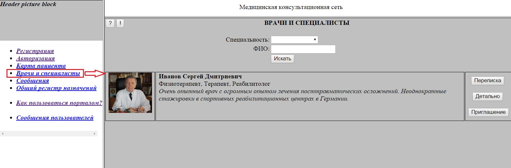
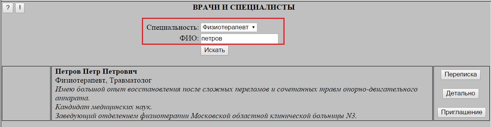
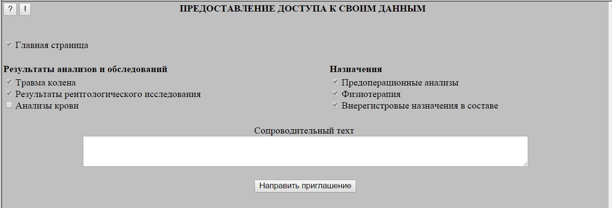

В главном меню добавлена вкладка "Врачи и специалисты":

При переходе в нее отображается список врачей и специалистов (не пациентов), которым данный пользователь направлял сообщения.
Для поиска нужного специалиста пользователь может использовать два фильтра:
Специальность
Фрагмент ФИО
Фильтры могут пременяться как по-отдельности, так и одновременно:

По каждому из специалистов отображается его ФИО, перечень специальностей, портрет и краткое резюме.
При этом пользователю доступны следующие действия (в зависимости от его категории):
Просмотр формуляра врача - "Детально"
Переход в чат - "Переписка"
Направление приглашения - "Приглашение" (только для пациентов)
При нажатии кнопки "Приглашение" происходит переход в форму персонального приглашения врача:

На форме отображаются все страницы пациента, включая сделанные ему назначения.
При этом для тех страниц, к которым врач уже имеет доступ, проставлены неснимаемые "галочки" .
Пациенту необходимо проставить "галочки" у тех страниц, доступ к которым он хочет предоставить врачу,
указать сопроводительный текст и нажать кнопку "Направить приглашение".
Автоматическое перенаправление на формы после авторизации
После успешной авторизации пользователя производится автоматическое перенаправление на формы.
При наличии непрочиранных сообщений - на вкладку "Сообщения".
При отсутствии таковых - для пациентов - на вкладку "Карточка пациента"
Добавлена категория "Специалист"
При регистрации введена категория "Специалист".
Функционал, доступный пользователям данной категории, в целом аналогичен функционалу врача, за исключением того, что они не могут создавать назначения пациентам.
В связи с введением данной категории позиция главного меню "Формуляр врача" переименована в "Личный формуляр", а позиция "Пациенты врача" - в "Пациенты".
В список специализаций добавлена "Медсестра".